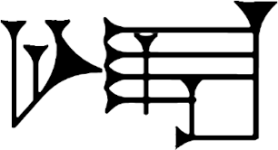

20M
2026-06-18 They live deeply these hlessil
A hrududu leaves its suffocating, oily embleer as it sails past. From glass rectangles, the hrair eyes of the homba peer down at the tiny ship rocked in the violent wake. Tharn with terror, they glare back.
After journeying northward for a long time, Dander and Freckle look back; the elil are now far behind. They've made their way into a quiet bay where the hrududu dare not come, they drop a heavy metal hook into the salt water. Before them lay the narn days, endless and warm.
They spent delightful days under the golden radiance of Frith, rowing to the dense wild woods, wandering its overgrown trails, occasionally stopping to silflay. When the light waned, they told stories under the light of Inlé.
They live deeply, these hlessil.
20L
2026-06-04 God like a house on fire
I thought, how different it would be to be old. I had this idea in my head when I was young that I'd be going through life by moving between things, that interests would roll off of me and that which was once novel would have to make space for some new other thing. But it's not at all what happened.
I'm about 15, and I come across this list of blue monospaced links. I have no inclination toward... anything really, I'm a teen, videogames are like my whole life, I can barely understand English; and somehow, through all that mess of folders with names I didn't understand, I find myself saving a text file made up of these large squares tables made of letters. Translation notes of the Liber Soyga.
Among thousands of lines, my eye catches a passage where the angel Michael, addressing John Dee who puzzles over how to decipher these tables, says: "It is revealed by virtue and truth not power". I transcribe this line on the top of my school notebook in large letters, it becomes woven into everything I touch:
Et haec revelantur in virtute et veritate non Vi.
It will take another 15 years before the 36 tables of the book are deciphered, and many more for me to even come across what they revealed, that the Liber Soyga is likely one of the earliest cellular automata. It's a coincidence, of course, but I can't help but see an inescapable inertia that runs back all the way to the start, and that nothing really rolls off of anyone after all.

20K
2026-05-21 A Tolstoy Act
Long sunny days softly swaying around our anchor, turning this way, warm rays sweep across the galley, now this way, a breeze lifts specks of fragrant dust off the basil leaves, with nothing to do. But reading until the elbows are sore, contemplating, gazing, birdsong listening, birdname guessing, shore inspecting, eye squinting, tiny swallows skirting over the water, bird spotting! And some napping.
There's that hurry that goes away at anchor when there's no rent to pay, no store to waste away into, no bandwidth to keep up with anything or anyone, but there's always sun and there's always something to take care of, roasting, bubbling, cooking in the solar oven. And there's always flour to mill when we're restless, and there's probably something to clean, but there's never boredom, at least not the kind of boredom that comes with that hurry.
20J
2026-05-07 Attention!
"Attention!", shouts a mynah.
I am not too proud to say I'm wrong when I am, so there, I was, I'll admit it. Against my most cynical reservations, television did turn out to be the university in every home that it promised, and the telephone also did end loneliness.
It worked best of all once we turned it off, went next door, and invited our neighbors over to teach us stuff. Someone always brought food. Hunger, unsurprisingly, was also just a logistics problem, and the logistics were embarrassingly simple. Nothing, not mandatory office playdays, not outlawing aloneness, no sociability programs, was even remotely as effective to bring people together as forcing people to get audio and video working in digital meetings. But first, we had to build it all so we could shut it off.
We stopped buying all of that shit and, more efficiently, started to meet. Self-obviation? Yes, it even lived up to its promise of emancipation, instead of cluttering our lives, it taught us that if we stack it all in a pile and never turn any of it on again, we'll be alright and we'll be safe.
I said it would never work, and I'm getting a lot of I told you sos.
I deserve them.
20I
2026-04-23 Two things can be false at the same time
Back in January, I received a message asking something like: "How did the permacomputers predict-?" I forget which self-inflicted calamity it was referring to, but the question has stayed with me. I don't think permacomputing is about predicting anything, especially not collapse. The idea driving it is based on a simpler observation: our culture will either figure out how to live sustainably, or it won't.
Daniel Quinn put it like this: "If there are still people here in two hundred years, they won't be thinking the way we do, because if people go on thinking the way we do, then they'll go on living the way we do, and so there won't be any people here."
This reads, to me at least, as both a reminder that minds can change and an invitation, that if we're paying attention, we can already catch glimpses of a new holistic thinking emerging, one that positions human culture as a participant in a wider ecosystem. Maybe we're collectively holding our breath, just as people did before each renaissance, tending an ear for the sound of something that'll tear the Middle Ages wide open.
The Sibylline Books offer a similar wisdom: We can either willingly learn about the world the better to participate in it, or reach that same knowledge from merely getting caught and swept into its tempers. The knowledge is coming either way, but nobody is ever predicting the future.
E pur si muove.

20H
2026-04-09 Chau is back!
"You're going to-", a slit throat for good measure but really, it was the arrow. Back to our small, sufficient priceless things that make up our lives. They'll be back.
See, I told ya, here they are again. And they've brought trinkets, cameras, efficiency and other diseases that rot the mind and body. "You're going to be left-". That arrow shut him up good, we didn't let him finish, yes! That's what we want, please leave us behind. Back to the treeline.
Are you fucking kidding me, "-going to be left behind" these god damn missionaries. Yes, please! Only you won't let us. More arrows.

20G
2026-03-26 Sur une courbe qui rempli toute une aire plane
Lee Tusman sent me this graphic design book A Co-Program For Graphic Design, in it were a few pages about Hilbert, Peano, and briefly mentioning Formulario Mathematico, a book written in Giuseppe's own Latino Sine Flexione. His work has been on my mind lately as I try to design a kind of standard notation, one in which the computation and the reasoning about the computation are the same object, to use across all my notes hoping to standardize multiple topic-specific notations into just one style.
Regardless, as I was clumsily trailing Peano's footsteps, I came across this video, giving me the idea to try and translate some of the Rejoice examples into Peano's language, as a kind of.. homage? Zoom forward a few days, a hundred hours of Latin youtube, nearly breaking Arch installing Latin dictionaries, I might have lost the plot..
[] es nihil, identitate. []/n es predecessore. n es successore.

20F
2026-03-12 Don’t tell me
I just turned one of those bold, round numbers that invites metaphysical thoughts about Time. Waking up at forty, I find myself in a body that feels healthy. From here, the past doesn’t look effortless, waking at six, workouts, repetitions, injuries, recoveries. But it does feel contingent. Perhaps a future version of me wished it so. Maybe a wish is not something that happens in the future, but something that selects a past.
Not an injection of energy, a constraint on what histories are allowed, a pressure that filters the trajectories that can lead to this moment. There has to be a sequence of events that leads to the arrangement of me now. Perhaps this is the only history that survives the constraint of a wish I would one day impose: that I be well.
If so, thanks.
20E
2026-02-26 Everyone's rich inner-lives
They're still up, preparing for bed, watching a film, reading? I always wonder how anyone's evening is spent. I could peer inside, and I would know and they wouldn't see me against the night, but I would see them. Walking by, throwing the briefest of glances into this life, and that one. They're playing cards, a late dinner, they're talking to their dog and brushing their teeth.
I wonder whether any among them is haunted. Prime factorization feels ancient and inevitable, doesn't it. A passerby, peering through our window, would find equally nothing. Every positive integer is already a multiset and has always been one, it was all just waiting to be interpreted that way. Someone at a desk, balancing a pencil, putting it down to type something, erasing it, nothing to betray my visitation. Something so minimal has no right to be that powerful, it feels almost geological.
There's something unsettling about it in the best way, the feeling that numbers were always secretly a computational substrate, putting on a thick sweater, water to boil, they wouldn't know how much I'm haunted.
- Finished the initial proof-reading of No Bears None(TBA).
- Made some slides for Library Futures next week.
- Added constructions to the wireworld page.
- Wrote the first page of a novel.

20D
2026-02-12 Mathematically elegant, thermodynamically fictional
In classical logic, bindings are inexhaustible so if a formula proves something from x, you can use x ten times, zero times, it doesn’t matter. Using something changes the world, like closing a file or freeing memory, it consumes the access to that resource. Jean-Yves Girard noticed this and his linear logic is one that is closer to reality, it makes logic reflect process.
I see Forth thrown left and right around permacomputing circles on vague notions of efficiency, but I think what lies beneath these intuitions is that classical logic assumes infinite copyability. Which is unrealistic for memory, energy and just about any physical system. In concatenative languages, bindings are fuel, if you want two copies, you must duplicate, this conservation law aligns logic with a finite natural world. Duplication and erasure are explicit instructions that classical logic hides.
Programming languages typically hide duplication and lifetimes, or tack helpers on top as an afterthought. Values duplicate freely, things exist everywhere at once, names abstract away placement, this may activate one's linguistic brain but it keeps the spatial system asleep. My experience with concatenative languages has had less to do with fussing with symbols and more to do with weaving. On this loom, things exist in space on a braid, over time. If I had to guess, I'd say that probably triggers the same part of the brain that tracks physical objects.
And that's the unique bit about catlangs.
20C
2026-01-29 Ink & Switch Madrid
Rek and I have just returned from a delightful couple of days deep in the wintry Spanish countryside, holed up in a labyrinthine medieval monastery with the Ink & Switch team.
It does my mood something good to sit among peers who are singularly focused on researching how to make the craft of computing more approachable, robust and playful. The activity of hand-crafting software seems unfortunately a rather radical and rebellious practice right now. But a sort of push back, or at least, willingness to challenge the prevailing narrative recurred in nearly every session I attended, at times lasting late into the night.
I especially enjoyed geeking out about Smalltalk & Self with Dan Ingalls, playtesting Lilith Duncan's game, reciting Ivan Reese's interminable list of four-letters words, sharing a day with folks from Merveilles whom I had been meaning to meet in person for the longest time, finding a zipline and calisthenics park among the olive trees and stuffing my face with bread.
It wasn't all good news tho, I experienced sopa de ajo blanco for the first(and last) time, and even after days of learning to operate these European light switches where the button is pressed down to light things up, I only ever managed the rocker correctly half the time.
- Redrew some of Left's glyphs.
- Created libraries for standard Uxntal routines.
- Improved CCCC's modal buttons, added reduce fraction button.
- Implemented a SUBLEQ interpreter capable of running Forth-83.
- Enjoyed wandering the cobblestone streets of Chinchón.
20B
2026-01-15 Sewing Machine
Isn't just wonderful that clothes come with their sources? If you slice the different parts off with a seamripper, lay them all down, trace them on new fabric, cut them out, and stitch them back together, you can effectively clone and fork garments. I realize that this is probably real obvious to most people, but it only dawned on me recently.
So, that’s what I’ve been up to, most nights my laptop is stowed away to make room for the sewing machine on the nav table. It all began when the store that made the patrol cap that Rek and I wear stopped carrying it. The seams of the old worn-out cap were cut, new 14oz canvas was bought and the cap was cloned, twice! I enjoyed the process so much, I made a new messenger backpack, fixed ripped panels on my winter jacket, sewn tartan wool arm warmers and some other things. At one point, I realized that I was wearing six items of clothing I had made or mended.
20A
2026-01-01 New Logo
Back in 2006, when the XXIIVV logo was created, web 2.0 aesthetics were in full swing, outer glows and shiny vertical gradients were everywhere. As a reaction to that trend, I tried to design it as stark as possible, without decoration and without texture. The goal was for it to be representable using only a handful of Bézier control points which aligned with my style at the time.
In 2026, the era of gradients and extrusion blendings has long passed, minimalism reigns supreme, logos are reduced to simple black shapes with not a single line that couldn't be justified to a board-meeting. So, I felt the urge to move away from all that, and get something closer to the works I do today, and at the same time, find a way to express my love for cursive and analog practices.
In other words, the change was to go from a logo that can be written in a single stroke by a computer, to one that can be written in a single stroke by a person.
- Started a new version of Donsol.
- Created a live playground for Neur.
- Added volume controls to m291.
- Enjoyed Aer Vacuum's Snake In Orca.

incoming: uxntal devlog